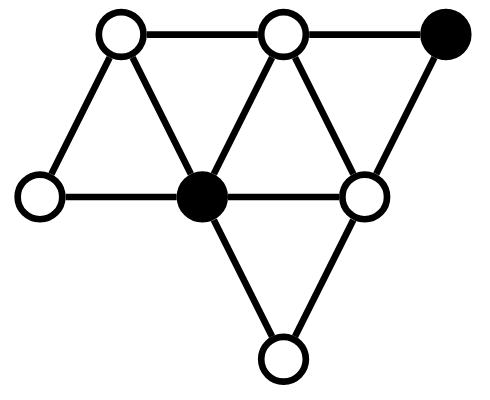

SANTIAGO
Projetos / Experimentos
Conjuntos Dominantes em Grafos.

Um estudo sobre cotas e relações de grafos em clásses de grafos planares.
AutoEncoders: Interpolação controlada no espaço latente.
Dataset MNIST, interpolação no espaço latente controlada de modo a gerar vídeos com características mais humanas.
Mapa Auto Organizáveis: Grids genéricas.

Usando grids de grafos genéricos ao invés da clássica NxM grid.
AdaBoost: Diferente classificador.

Diferentes stumps de classificação para árvores.